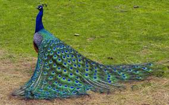

PEACOCK
The peafowl include three species of birds in the genera Pavo and Afropavo of the Phasianidae family, the pheasants and their allies. There are two Asiatic species: the blue or Indian peafowl originally of the Indian subcontinent; and the green peafowl of Southeast Asia; and one African species, the Congo peafowl, native only to the Congo Basin. Male peafowl are known for their piercing call and their extravagant plumage. The latter is especially prominent in the Asiatic species, who have an eye-spotted "tail" or "train" of covert feathers which they display as part of a courtship ritual. The term peacock is properly reserved for the male; the female is known as a peahen, and the immature offspring are sometimes called peachicks.
